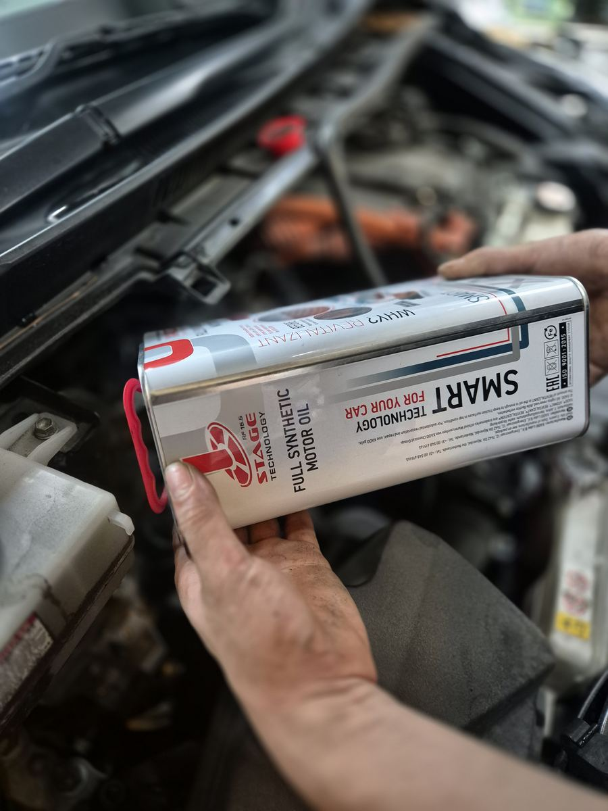

For drivers
Want XADO at your own workshop?
Tell us which workshop you use and Roland from XADO Singapore will contact them about XADO oil. You keep your own mechanic. No minimum order and no obligation for the workshop.
Can't find a workshop you like? WhatsApp Roland and he'll recommend one.
WhatsApp XADO (Roland)For workshops
Offer XADO at your workshop
XADO Singapore helps car workshops add XADO engine treatments and oils to their services. Message XADO on WhatsApp and Roland will take you through how it works.
No minimum order, no obligation
Why workshops offer XADO
XADO Singapore exists to send drivers to workshops that offer XADO. Here is what that means for your workshop.
Drivers are told to ask for it
This site tells Singapore drivers to ask for XADO by name at their next oil change, and sends them to authorised workshops to do it.
Listed on the workshop finder
Authorised workshops get a listing on the XADO Singapore workshop finder, with a WhatsApp button so drivers message you directly.
Added at a normal oil service
Engine treatments go into the oil filler at a normal service, with no engine strip-down. It fits into work you already do.
A range for common jobs
Engine treatments, oils with Revitalizant® built in, and EX120 formulas for automatic, CVT, DSG and manual gearboxes and power steering.
An established European brand
XADO was founded in 1991 and sells in more than 100 countries. Production runs under XADO Germany and XADO Lube B.V. (Netherlands) licences.
Honest to sell
XADO positions its products as protection and wear restoration, not a fix for broken parts, so customer expectations stay realistic.
Product effects described on this site are XADO's own claims. Results depend on engine condition, oil and maintenance history.
How to start
Talk to XADO Singapore first
- Tap the WhatsApp button and send the message with your workshop's name.
- Roland from XADO Singapore replies to talk about the range, trade pricing, training and point-of-sale material.
- Start with what suits your customers. There is no minimum order and no obligation.
No minimum order, no obligation
Prefer the distributor directly? Call Rev Solutions on +65 6876 1456 or email enquiries@revsolutions.com.sg.

Questions from drivers and workshops
Is there a minimum order to start with XADO?
No. There is no minimum order and no obligation. WhatsApp XADO Singapore on +65 9339 1185 and Roland will talk you through it.
How does my workshop become an authorised XADO workshop?
Message XADO Singapore on WhatsApp, call the distributor on +65 6876 1456 or email enquiries@revsolutions.com.sg. Authorised workshops are listed on the Find a XADO workshop page of this site, so drivers can message them directly.
Who distributes XADO in Singapore?
Rev Solutions Pte Ltd is the exclusive distributor of XADO in Singapore. XADO products are made under XADO Germany and XADO Lube B.V. (Netherlands) licences.
How is a XADO engine treatment applied?
It is added at a normal oil service. XADO says to warm the engine, switch it off, pour the treatment into the oil filler without going above the dipstick maximum, then run the engine for 3 to 5 minutes. No engine strip-down is needed.
Can XADO fix a broken engine?
No. XADO describes its products as protection and wear restoration for worn friction surfaces, not a repair for broken parts. A damaged engine needs a proper repair first.
I don't have a regular workshop. Can XADO recommend one?
Yes. Tap the WhatsApp XADO (Roland) button under "Can't find a workshop you like?", tell Roland your car model and area, and he will recommend a workshop near you.
My regular workshop does not carry XADO. What can I do?
Fill in the form at the top of this page with your workshop's name and WhatsApp number and tap Send to Roland. Roland from XADO Singapore will contact your workshop about XADO oil. There is no minimum order and no obligation for them.
Ready to offer XADO?
No minimum order, no obligation. Message XADO Singapore and Roland will get back to you.